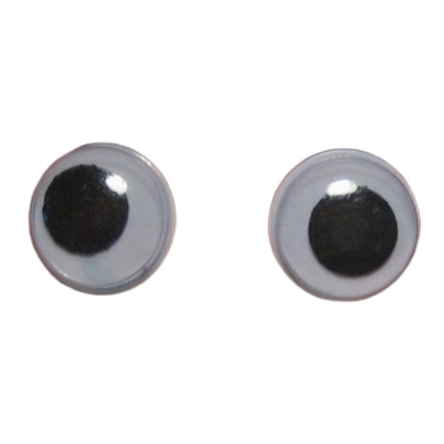

You can reach me through carrier pigeons, smoke signals, by mail, message in a bottle, or telepathy.
I can love you (I can love you) I can love you (I can love you) I can love you better than she can I can love you (I can love you) I can love you (I can love you) I can love you better than she can [Verse 1: Mary J. Blige] Sitting here, wondering why you don't love me The way that I love you And baby, have no fear 'cause I would never, ever hurt you And you know my love is real, boy, I can [Chorus: Mary J. Blige] I can love you (I can, I can love you) I can love you (Love you, I can love you) I can love you better than she can I can love you (I can love you) I can love you (I can love you) I can love you better than she can [Verse 2: Mary J. Blige] I know sometimes can get rough, but we'll make it We'll make it through the storm And I know I will try to make sure that you can trust me And you know the reason why that I say
Click here to return to Chin Chilla.